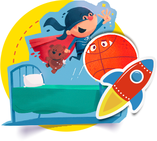

Peças
Do convite ao cartão de agradecimento. Da forminha de doce à lembrancinha. Aqui você vai decidindo quais peças vão abrilhantar sua festa e pode customizar uma a uma.
Começar por peças

Coleções
Aventura no espaço, um dia de circo, casamento vintage e festa floral são apenas alguns dos temas que você vai encontrar navegando pelas nossas coleções. Se quiser começar sua festa por aqui, vá em frente.
Começar por coleções